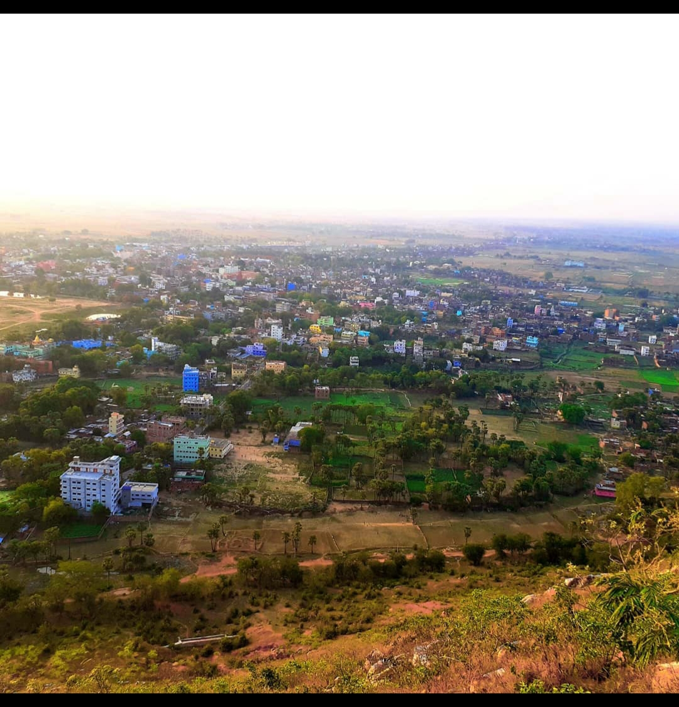
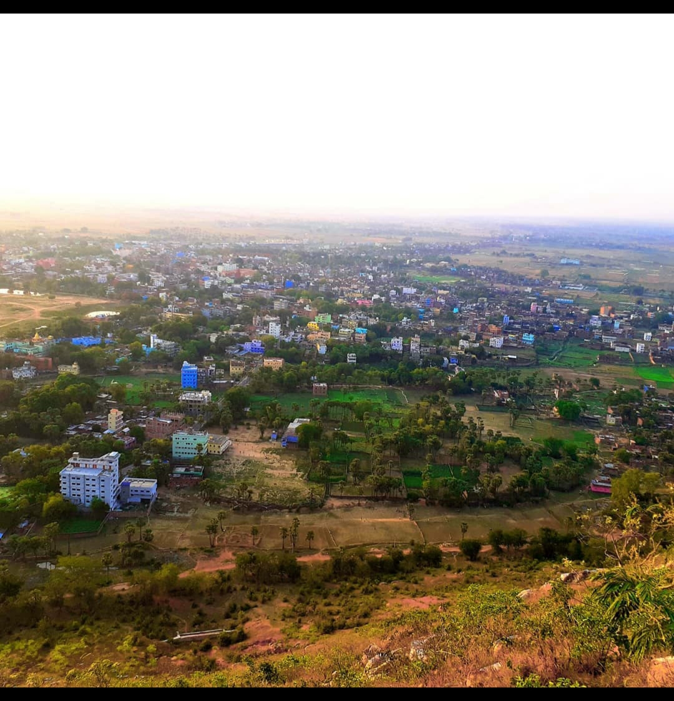
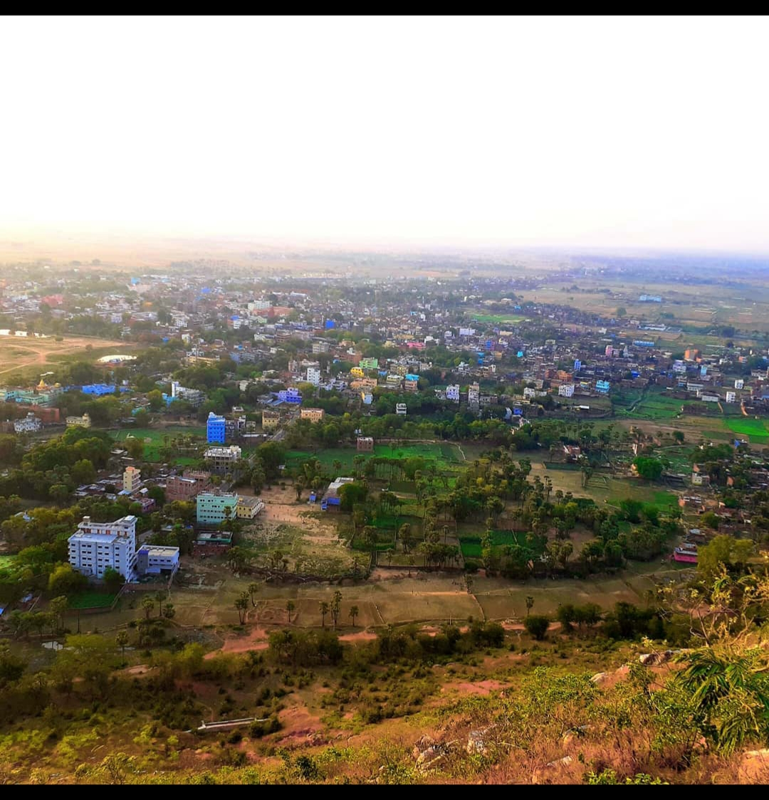

Victory and Bhakti

Rajgir is also famous for its association with Haryanka dynasty Kings Bimbisara (558–491 BC) and Ajatashatru (492–460 BC) as their capital city. Ajatashatru kept his father Bimbsara in captivity here. The sources do not agree which of the Buddha's royal contemporaries, Bimbisara and Ajatashatru, was responsible for its construction. Ajatashatru is also credited with moving the capital to Pataliputra (modern Patna).
The name Rajgir came from Rājagṛiha, meaning "house of the king" or "royal house", or the word Rajgir might have its origin in its plain literal meaning, "royal mountain". It was the ancient capital city of the Magadha kings until the 5th century BC when Udayin(460–440 BC), son of Ajatshatru, moved the capital to Pataliputra.[11] In those days, it was called Rajgriha, which translates as 'the home of Royalty'.
Shishunaga (413-395 BC) founded Shishunaga dynasty in 413 BCE with Rajgir as its initial capital before it was moved to Pataliputra.
The epic Mahabharata calls it Girivraja and recount the story of its king, Jarasandha, and his battle with the Pandava brothers and their allies Krishna. Jarasandha who hailed from this place, had been defeated by Krishna 17 times. The 18th time Krishna left the battlefield without fighting.[12] Because of this Krishna is also called 'ranachorh' (one who has left the battlefield).[13] Mahabharata recounts a wrestling match between Bhima (one of the Pandavas) and Jarasandha, the then king of Magadha. Jarasandha was invincible as his body could rejoin any dismembered limbs. According to the legend, Bhim split Jarasandha into two and threw the two halves facing opposite to each other so that they could not join. There is a famous Jarasandha's Akhara (place where martial arts are practiced).
It is also mentioned in Jain and Buddhist scriptures, which give a series of place-names, but without geographical context. The attempt to locate these places is based largely on reference to them and to other locations in the works of Chinese Buddhist pilgrims, particularly Faxian and Xuanzang.
It is on the basis of Xuanzang in particular that the site is divided into Old and New Rajgir. The former lies within a valley and is surrounded by low-lying hills, Rajgir hills. It is defined by an earthen embankment (the Inner Fortification), with which is associated the Outer Fortification, a complex of cyclopean walls that runs (with large breaks) along the crest of the hills. New Rajgir is defined by another, larger, embankment outside the northern entrance of the valley and next to the modern town.
It was here that Gautama Buddha spent several months meditating, and preaching at Gridhra-kuta, ('Hill of the Vultures'). He also delivered some of his famous sermons and initiated king Bimbisara of Magadha and countless others to Buddhism. It was here that Budhha delivered his famous Atanatiya Sutra.
On one of the hills is the Saptaparni Cave where the First Buddhist Council was held under the leadership of Maha Kassapa.
It is sacred to the memory of the founders of both the religions: Jainism and Buddhism and associated with both the historical Mahavira and Buddha.
Lord Mahavira, 24th Tirthankara spent fourteen years of his life at Rajgir and Nalanda, spending Chaturmas (i.e. 4 months of the rainy season) at a single place in Rajgir (Rajgruhi) and the rest in the places in the vicinity. It was the capital of one of his Shravaks(follower) King Shrenik. Thus Rajgir is a very important religious place for Jains. The twentieth Jain tirthankara, Munisuvrata is supposed to have been born here. An ancient temple(about 1200 years old) dedicated to Munisuvrat bhagwan is also present here along with many other Jain temples. This temple is also a place for four Kalyanakas of Bhagwan Munisuvratnath.